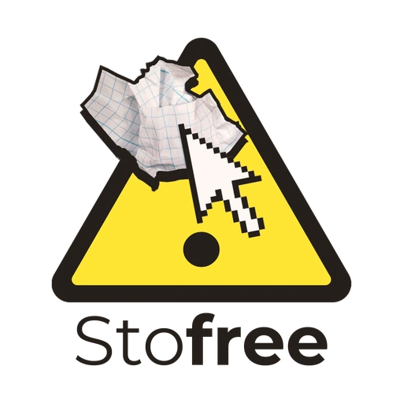

Programming & Backend
Core languages and backend work I use in my projects.
$ whoami
Computer Science Graduate, Software & AI Developer
I build modern web applications, AI-powered tools, and practical software solutions with a focus on usability, performance, and clean design.
{"name": "Shanuka B. Herath","role": "Software & AI Developer","focus": ["Web", "AI", "Security"],"specialisation": "AI Engineering & DevSecOps","status": "open_to_work"}
~/about
I have completed my BSc (Hons) in Computer Science at the University of Bedfordshire with a Second Class Upper Division, and I focus on building practical software solutions across web development, artificial intelligence, and cybersecurity.
My projects include Photosphere, an AI-powered photo editing web application with Sinhala language support, and AESA, an AI-assisted security-focused engineering agent designed to inspect repositories, propose code changes, and apply automated security and code-quality checks.
With a background in graphic design and hands-on experience with full-stack development, APIs, Docker, and security tooling, I aim to build software that is functional, secure, and thoughtfully designed.
interests
~/skills
Grouped by the kind of problem they help me solve, not ranked by percentage.
Core languages and backend work I use in my projects.
Interfaces for the web apps I build.
Integrating AI services into working applications.
Fundamentals and security tooling I’m applying in projects and still learning.
Where application data lives.
Practical project experience; still building depth.
~/projects
Two featured builds, an AI photo editor and an AI-assisted security agent, plus more projects across game development, security engineering, machine learning and desktop development.
පසුබිම ඉවත් කර වර්ණ වැඩි දියුණු කරන්න“Remove the background and enhance the colours”
AI-based photo editing web app with Sinhala language support
Photosphere is an AI-powered photo editing web application built to help Sinhala-speaking users edit images using Sinhala text prompts, Sinhala voice input, and icon-based controls — without needing to know English editing terminology.
Most photo-editing tools use English-only menus and technical vocabulary. That’s a real barrier for Sinhala-speaking users who are comfortable describing what they want in their own language but not in editing jargon.
Build a photo editor where a Sinhala-speaking user can describe an edit in their own words — typed or spoken — and have it applied correctly, while keeping a familiar icon-based toolbar for users who prefer direct manipulation.
A React frontend handles image upload, prompt input (text or voice), and the editing canvas, while a FastAPI backend interprets the prompt, routes it to the correct image-processing operation, and returns the result. User accounts, edit history, and exported images are stored in MongoDB.
The frontend communicates with the backend through a documented REST API (Swagger/OpenAPI). Editing operations — background removal, sharpening, noise reduction, upscaling, colour enhancement — are implemented as separate backend services so each can be tested and improved independently. Background removal uses U²-Net; other operations use standard image-processing techniques rather than a trained model, which is intentional — not every step in the pipeline is an AI model, and the project distinguishes between the two.
The Gemini API is used to interpret free-form Sinhala prompts and map them to one or more supported editing operations, including cases where a single sentence requests more than one change.
Prompts can be typed directly in Sinhala or spoken and converted to text through speech-to-text before being sent to the interpretation step. This was one of the more time-consuming parts of the project, since everyday Sinhala phrasing for editing requests doesn’t map neatly onto a fixed command list.
Some prompts describe more than one edit at once (for example, brightening and sharpening in the same sentence). The backend breaks these down into an ordered sequence of operations rather than requiring one instruction per action.
Every applied edit is stored as a step in a history stack tied to the user’s session, so edits can be undone or redone without reprocessing the whole image from scratch.
Backend endpoints were tested individually through the Swagger UI during development, alongside manual end-to-end testing of the prompt-to-edit flow across the supported operations.
Photosphere works as an end-to-end prototype: a user can sign in, upload a photo, describe an edit in Sinhala (typed or spoken) or use the icon toolbar, preview a before/after comparison, and export the result. No performance or accuracy figures are published here, as they haven’t been formally benchmarked yet.
Planned next steps include expanding the range of supported Sinhala phrasing, adding more editing operations, and running structured usability testing with Sinhala-speaking users.
AI Execution Security Agent
An AI-assisted engineering agent that inspects code, runs approved checks in a sandbox, and proposes fixes. It can never merge, push to a default branch, or deploy without explicit human approval.
AESA explores how to give a coding agent least privilege: every action the model requests passes a default-deny policy engine, runs inside a locked-down Docker sandbox, and is recorded in an audit log, so the AI model is never the security boundary. It is a learning project and has not been independently audited.
A browser-based puzzle game developed using Godot Engine and GDScript, supported by a security-focused CI/CD workflow. Combines game development, application security testing, automated security scanning, and secure build pipeline engineering.
Game development
A browser-based puzzle game developed using Godot Engine and GDScript, exported for HTML5 browser execution and deployed to Vercel.
Security engineering
Automated security tests that run against the actual game, a hardened build pipeline with hash-pinned dependencies, and scanning with CodeQL, Trivy, and Gitleaks.
No Exit Online is a browser-based puzzle game developed using Godot Engine and GDScript, with a supporting security and CI/CD engineering workflow.
The original game project is maintained separately from the surrounding engineering components. The project incorporates automated security tests that run against the actual game, a hardened build pipeline with hash-pinned dependencies, and GitHub Actions workflows for continuous integration and deployment.
Security analysis and scanning are integrated into the development workflow using CodeQL, Trivy, and Gitleaks. Security findings, test results, and verification limitations are documented to provide transparency into what was implemented, configured, successfully verified, and left untested.
The game is exported for HTML5 browser execution and deployed to Vercel.
Technologies & Tools
Project Focus
A tabular Q-learning agent that learns to reach a goal in a 2-D grid world, with a Tkinter GUI and live training graphs. It compares standard Q-learning with reward shaping from a distance heuristic, which in the repository’s measurements reaches reliable performance in about 6.5× fewer episodes.
A Java Swing desktop application for managing healthcare appointments. Patients register and book appointments, administrators manage them from a dashboard, and confirmation emails are sent with JavaMail, with data stored in MongoDB.
A Python-based application that evaluates password strength and gives feedback on how it could be improved.
An application that demonstrates AES-based file encryption and decryption.
A simple authentication system demonstrating password hashing and secure login concepts.
~/software-releases
Software I’ve built, packaged, and released.

Windows Disk Space Analyzer
Version 1.0.0
Stofree is a Windows disk space analyzer designed to help users understand how their storage is being used. It provides visual drive and folder analysis, identifies the largest files, and presents file-type breakdowns to make storage usage easier to understand.
Stofree is strictly read-only. It never deletes, moves, or modifies files. Users can also export storage analysis reports in CSV and JSON formats.
~/experience
Freelance via Fiverr profile (opens in a new tab)
Freelance software development work offered through a Fiverr seller profile.
Multimedia Studio
Worked on visual design and image editing for client projects, before moving into software development.
This design background carries over into how I build interfaces today — I think about layout, hierarchy, and visual polish alongside functionality, not after it.
~/education
University of Bedfordshire
Completed · Second Class Upper Division
SCU – SLIIT City University
Completed
~/certifications
PortSwigger
CompletedRed Team Leaders
CompletedSLIIT City UNI
CompletedIBM / Cognitive Class
CompletedKaggle
CompletedLFS162
CompletedIssuer: Microsoft
Self-directed learning
~/services
I take on these as a junior developer / freelancer — happy to discuss scope before starting.
Modern, responsive websites built with React and Next.js.
React / Next.js interfaces focused on usability and clean UI.
FastAPI backends and REST API integration.
Adding AI-powered features to existing or new web applications.
Editing, enhancement, and processing tools built into web apps.
Login, password hashing, and access-control implementation.
~/contact
Looking for an internship, an entry-level role, or a small project built? Send a message and I’ll get back to you.